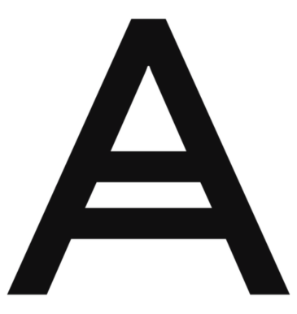
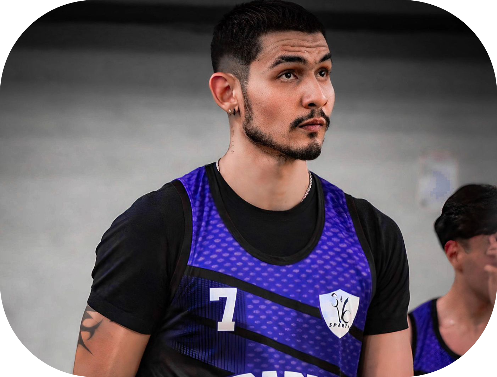

Prazer, sou Kayan Guerra
Graduado em Sistemas de Informação pelo UNASP-HT e pós-graduado em Segurança da Informação pela Faculdade Descomplica, com MBA concluído voltado à gestão estratégica de TI.
Atuo como Analista de TI em ambientes corporativos e hospitalares críticos, com experiência sólida em administração de redes, Active Directory, políticas de segurança, Firewalls e gerenciamento de SLAs. Tenho vivência prática na administração do Microsoft 365 e na implementação de soluções de backup e proteção de dados com Acronis, fortalecendo a resiliência cibernética e a continuidade operacional das empresas atendidas.
Complemento minha atuação com desenvolvimento Front-end em HTML5, CSS3 e JavaScript, unindo visão técnica e operacional para entregar soluções completas.
Habilidades Técnicas
Ferramentas e tecnologias com experiência prática de segurança e redes a desenvolvimento web.

PfSense

Acronis
365
WireGuard
Win Server
GrayLog

Wireshark
Hobbies
Sou atleta amador de vôlei tanto de quadra quanto de praia e frequento a academia regularmente. Esses hobbies me trazem equilíbrio, disciplina e energia para enfrentar os desafios da tecnologia com foco e criatividade.
Acredito que um profissional de TI saudável e equilibrado performa melhor e toma decisões mais claras sob pressão.
